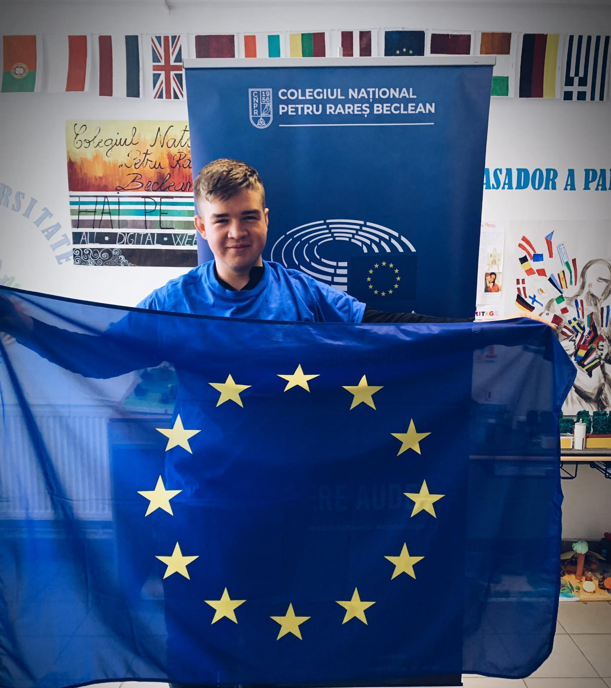
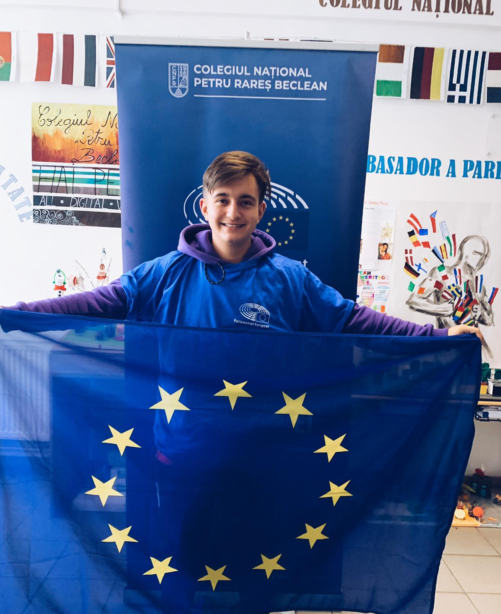
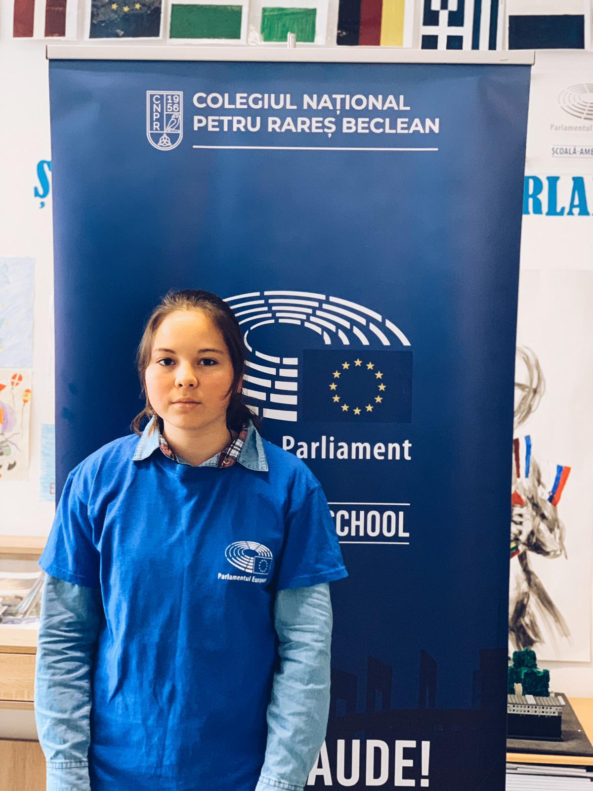
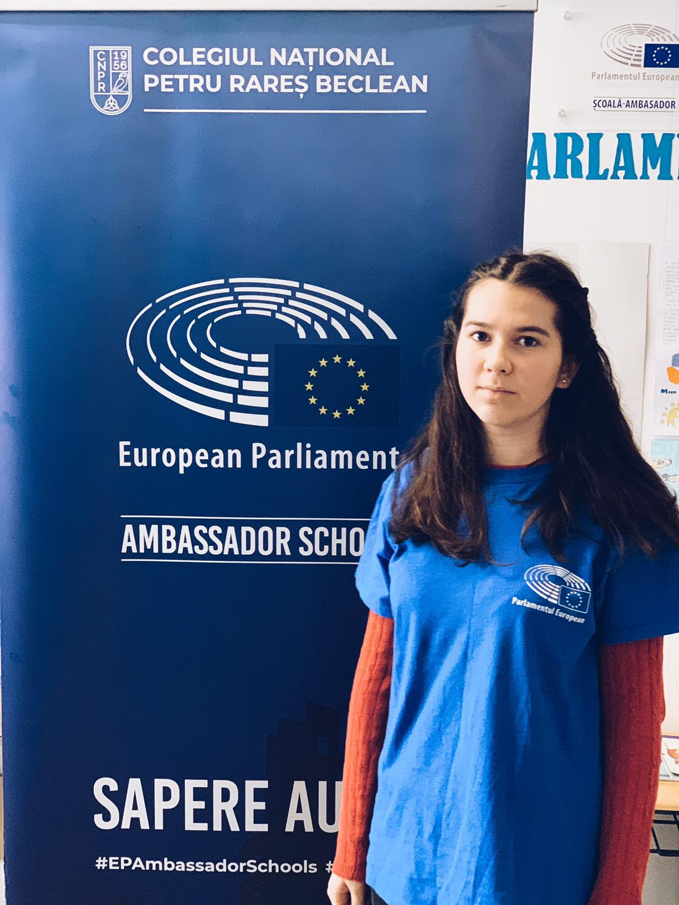
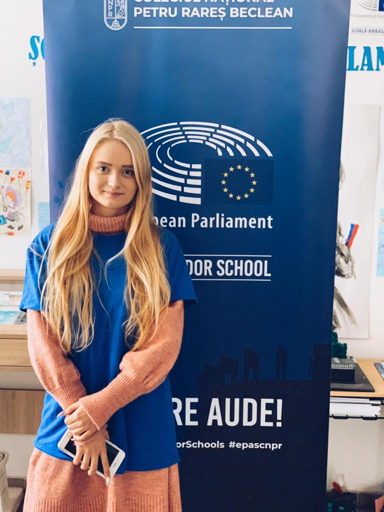
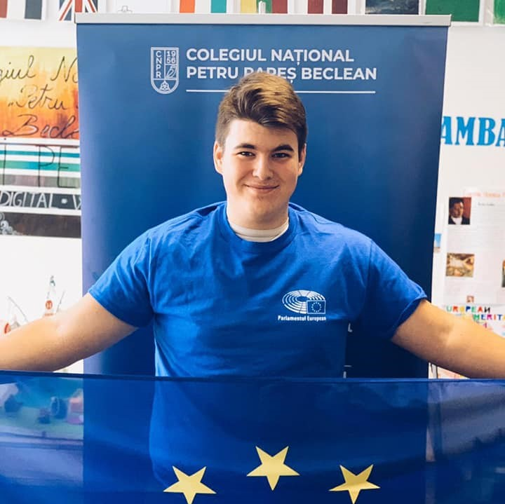

Budai Krisztian
Student, 11th Grade
My name is Budai Krisztian and I am 17 years old. I’m a member of EPAS team since last year and also Esentza Robotics team in this FTC season. One of my passion is robtics, a passion I discovered two years ago, when I participated
at FLL competition with Esentza Junior team. This is my second year in which I am involved in this project, and I love the fact that we formed a beautiful, pleasant and united group. For me, the #epascnpr team is an ideal team.
I feel lucky to be part of such a team and that I had the opportunity to connect with so many friends in such a short time. I love nature, especially winter season. I adore skiing and venturing to the highest heights.

Cioban Vasile
Student, 12th Grade
My name is Cioban Vasile and I'm 17 years old. I am in the 12th grade of the “Petru Rareș” National College. I am a new member of the EPAS team and I am pleased that I received the title of junior ambassador. I am eager for
work and I can’t wait to use my knowledge in communication to help the EPAS team. I am an open and friendly person, which made me easily integrate into this team. Besides school, my passion is football. Nothing compares to
those moments on the football field where there is only you and the ball, when all the stress and all the negative things go away. It's a passion that keeps you away from stress but also keeps you fit and I recommend it to
everyone.

Cîmpean Imola
Student, 9th Grade
Hello! My name is Imola Cîmpean and I am the youngest junior ambassador from „Petru Rareș” National College, a wonderful school from a little town, named Beclean. I like to read books and my favourite
franchise is"Harry Potter". I also like very much to draw and paint. In my free time I like to watch movies (especially movies with superheroes). My favourite school subject is English, because I learn to communicate with foreign
people. I like Physics too, because it helps me understand how things work. I am proud to be part of The #EPAmbassadorSchools team, because I have discovered so many things about youth rights and democracy!

Cîmpean Noémi
Student, 10th Grade
Hello, my name is Cîmpean Noémi and I study at “Petru Rareș” National Collage in Beclean. I like to draw, and to read interesting books. My favourite books are: “Pride and Prejudice” by Jane Austen,
and “The Hobbit” by J.R.R.Tolkien. I also like to watch movies in my free time, such as “Star Wars” or “Avengers”. My favourite subject at school is English, because I really like this language and I want to learn to speak
it properly. I had the great opportunity to participate in the Euroscola day, and I very much appreciated the fact that a lot of European languages were spoken and that I had the chance to work with teenagers from all over
the European Union.
Florean Ioana
Student, 12th Grade
My name is Florean Ioana. I am an 12th grade student at Colegiul Național “Petru Rareș” Beclean. I am studying Matematics and computer science.This is a profile which offers you a lot of opportunities
in the future where your dreams come true. But, of course, in order to achieve your dreams you have to work for them. I’m a dynamic, friendly person and I like to make new friends. My biggest passion is travelling. I adore
to travel, to meet new people and new cultures. Every year I travel around my country or even around Europe. Also, in my free time I like to go to the gym because I want to have a healthy lifestyle. I’m an active person who
wants to experiment new things. I’m glad that I was choosen as a junior Epas ambassador. I always wanted to interact with students from other countries and now my dream came true.
Forrai Diana
Student, 12th Grade
Hi! My name is Diana Forrai and I’m in 12th grade at “Petru Rareș” National College. I have chosen the EPAS team because it represents an opportunity to learn new things and to develop myself. I like
to travel, to visit different cities, but also to get into the world of books. I read all kinds of books, but I love reading love stories. I like to see how others express their opinions about different themes and situations.
That's what I think that I have learned these years in the EPAS team... I said I like to travel. I do it very often. I visit cities that soon become special to me. In my travels, I meet different people - from which I learn
new things and motivate me. Lastly, I think being part of the EPAS team represents a big challenge for myself.

Kerekeș Roberta
Student, 12th Grade
Hi! My name is Kerekeș Roberta and I’m in 12th grade at “Petru Rareș” National College. I've been a member of the EPAS team since last year, and I had the opportunity to visit the European Parliament
in Strasbourg. Many of my passions involve travelling, visiting different cities, or getting into the world of books. I read all kinds of books, but I love reading love stories. I like to see how others express their opinions
about different themes and situations. I do it very often. I visit cities that soon become special to me. In my travels, I meet different people - from which I learn new things and motivate me. Lastly, I think being part of
the EPAS team represents a big challenge for myself.

Măierean Mircea
Student, 11th Grade
My name is Măierean Mircea, I am 17 years old and I am a student at “Petru Rareș” National College, Beclean. I am in the 11th grade, studying Mathematics and Computer Science and it is something I
am proud of. Our high school is the perfect place where I can develop every day. I like to be stimulated, to be challenged as much as possible. That's why I like playing with the rubik’s cube or writing algorithms. I am a relative
new member of the EPAS team, this is my second year being in this group, but I have already got to know my colleagues and I am eager to get involved as much as I can in this project in order to reach our goals. As for my teammates,
they are some people you can work with, being always communicative and happy to help you. Besides school, a passion of mine is Computer Science. For me, this subject means more than a course we do in our school, it is already
a lifestyle. I practically enjoy my passion every day, hoping that in the future I will be able to transform this hobby in my job.
Moldovan Bianca
Student, 11th Grade
Hi! My name is Moldovan Lorena Bianca and I am 17 years old. I am part of the"Petru Rareș" Beclean National College. This high school opened my horizons and made me develop on all levels, showing me
every day how important work and education are at the same time. Thus, through the school I managed to enroll in the #epascnpr team, which in turn was and will continue to be an experience that helped in my development as a
human being. Through this, we learned what it means to work as a team, as well as the rights and benefits that we are part of in the European Union. Thus, I was able to develop new passions, and one of them is to give what
is best in what I do. I am a determined person and I always try to reach my goals, and one of my goals is this: to fight for my dreams."Sapere aude!"
Oprea Vlad
Student, 12th Grade
My name is Vlad Oprea. I am 17 years old and I am in the twelfth class at"Petru Rareș" National College. I'm studying here from 5th grade and I'm proud of it. I like to get involved in various activities.
I'm a friendly and humorous guy. I think that as a group, with people which are open-minded, it is easier to discuss and collaborate. That's why I am part of the E.P.A.S. team. I'm a fan of metal music. I like to take part
in concerts where I can make new friends and of course, complete my collection of bracelets and T-shirts with their logos. You've certainly heard of the Celtic festival. Well, it's one of my favorites. I participated in each
edition and I will do so in the future. I think this kind of music should be lived and felt, helping the person to overcome certain situations of life.

Papiu Cristian
Student, 12th Grade
My name is Papiu Cristian and I am 18 years old. I am a student in the twelfth class at"Petru Rareș" National College. I am in the computer mathematics profile and I can say that the time spent in
this high school so far has been the most productive period of my life, during which time I have developed on all levels. The EPAS project for me meant the opportunity to join a group because I got into it when I was still
in 9th grade. It meant an opportunity to make new friends, but when I joined this project I didn't realize how much it would help me. Besides the things about Europe that are very valuable, I can proudly say that I have learned
to express myself, I have overcome all emotions and now I can speak in front of any audience without any emotion because the project has put me in some situations where I have to speak in front of many people. A representative
example was when I was in Strasbourg and I asked a question in front of the European Parliament. I also suggest to other high school colleagues to get involved in as many projects as possible, because they will develop some
personal aspects that they didn't even know existed. Besides school and all the projects I am involved in, I like to play sports. Sport for me is a way out of everyday life. In the end, I think that in life you need 3 passions:
one to bring you money, one to dissolve your artistic sense and another to keep you in shape.
Rusu Raluca
Student, 12th Grade
My name is Rusu Raluca. I am 18 years old and I am in the eleventh class at the"Petru Rareș" National College. I study here from first class and I am proud of it, as I am proud of my position as Junior
Ambassador. I believe in European values because they are important for the development and improvement of humanity, and in addition, they are long used in our school, and beyond. Besides school, I enjoy spending time outdoors
through all kinds of sports. I like snowboarding the most. From the first closing of the links, to the last descent from the slope, I felt nothing but pure adrenaline and happiness. Another passion of mine is dance, either
ballet, or modern or society, or even just a few movements. I'm also part of the Esentza Robotics team, one of my high school robotics teams.

Sfechiș Anda
Student, 11th Grade
I am Anda, I am 17 years old and I am very pleased to be part of the „Petru Rareș” National College's #EPAmbassadorSchools team. Since I have heard that there is an opportunity to join such a team,
I wanted to join the European Parliament Ambassador School project and help as much as I can, because I like to communicate with others, but also to visit new places, to engage in activities relating to the future of the world
and, in particular, of the Europe. As hobbies, I like to write and read, activities which, over time, helped me to have a more developed vocabulary and to communicate more efficiently. So, the #epascnpr team has come to be
an environment for me in which I can do what I love, in which I implement my impressions and wishes, and which are related to my development and the effective involvement, in order to create a better future. Then it came to
represent a second family for me, a community of wonderful people with whom I came to fill my dream of being part of a project of this kind, of changing, at least a little, ideas and perceptions of Europe's development.

Stanciu Darius
Student, 12th Grade
My name is Stanciu Darius, I am 17 years old and I am part of the EPAS team of the “Petru Rareș” National College, Beclean. I am very happy to be part of this wonderful team, one reason being that
I managed to do something in high school that I will remember after years. In this team I created close bonds of friendship, I knew my colleagues better. One of my passions is to travel, and this program offered me the opportunity
to satisfy this passion. I am a friendly and joking person, at the same time I am a faithful person, I go to church often, I like to involve myself as much as possible. In the church I discovered many passions, one of them
would be playing the guitar, which gives me a bit of color in my life, everything is nicer when I take the guitar in my hand.

Szasz Alexandru
Student, 11th Grade
Hello, my name is Alex, I am 17 years old and I am member of European Parliament Ambassador School Junior’s team from “Petru Rareș” National College Beclean. I’m so glad to take part of this nice project
because I believe that there will always be a place for progress in society, and the European Union, through the principles it promotes, brings us one step closer to the future. The fact that I’m a student at a school which
has received the title of Ambassador of the European Parliament also means that me and all my colleagues have the opportunity to study in the best conditions, together with our dedicated and passionate teachers. I wish that
everyone must be free to think and to talk, and in the light of its facts and words, it will be judged by the society. From a physical or material point of view, people should be equal, a fact supported by the EU's ideology.
I love every type of creation, art and informatics, but also studying modern languages and the combination of these four opens many opportunities for the young people who share my passions, especially from a professional point
of view. So, the students’s work is rewarded by the multitude of programs that the European Union offers them. As hobbies, I like to draw, listen to music (especially metal music), but also to play football, growing up with
sport from a young age. Contrary to most people, this kind of music brings me a state of calm and pleasure that is difficult to reproduce with other sounds, while also giving me an energy that I am more than happy to use. Also,
unlike other sports, football gives me the opportunity to work as a team, and to discover that, cooperation is the key to success in our daily lives, but also to lead a healthy lifestyle, which assures me a harmonious growth.

Urian Andra
Student, 12th Grade
Hello hello! My name is Urian Andra and I am a member of the European Parliament Ambassador School Junior Ambassadors` team from “Petru Rareș” National College Beclean. I am delighted to be part of
such a project of significance for my school. A change begins with a step followed by a supporter and a “copier”, which is why I think WE can make the difference. I help and believe in people without waiting for anything in
exchange. I Believe in dreams and in the power of the people to do good. I am an open, sociable and very friendly person. One of my passions is traveling. I like to know new people, new places and new cultures. I often plan
short visits to various places because I am eager for knowledge. I'm passionate about sports, which is why I'm running every day. I pay attention to myself and to my body. I like to participate in dance, techno music festivals
like Untold, Electric Castle, Awake, because music and time spent with my friends make me happy.

Zsigmond Artur
Student, 10th Grade
Hi! My name is Zsigmond Artur and I’m in 10th grade at “Petru Rareș” National College, studying Mathematics and Computer Science, and, I consider, this is the best specialization for my future. I believe
the specialization we choose doesn’t fully define us as persons. Not all my dreams are connected to what I study in high-school. My biggest dreams are becoming a programmer and seeing the whole world. I’m a friendly person
and I always try to meet new persons, wherever I am. The fact that I was able to travel as much as I want, making trips with my family or with my friends gave me a big opportunity to make new friends. I always want to help
other people, those activities fulfill me the most. One of my biggest passion is and will always be playing computer games. I play them in order to relax. I don’t consider that they affect me. In fact, I learnt a lot of moral
skills from the games. From choosing a character for my game to cooperating with other players, all these helped me to grow. I love the games because I can make decisions while I am playing. One of these games is Tom Clancy's
Rainbow Six Siege, an online shooter, where only the most patients and calculated can win. The fact that any little mistake can destroy the progress and, and, in the end, I lose, helped me to become a calculated person. My
favourite season is summer, because I have more opportunities to travel and spend more time with my friends. I’m glad to be a member of the EPAS team and I hope we will grow in the future.